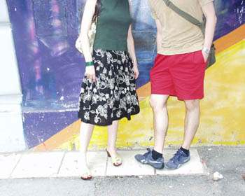

Kućica u cveću?
Prema nekim novijim istraživanjima, prilikom kupovine kuće u Engleskoj, zelenilo i zvezde u susedstvu predstavljaju veću vrednost od blizine lanaca kafea.
Rustično zelenilo koje dočarava seoski u gradskom ambijentu predstavlja skoro nezaobilizan momenat za kupce nekretnina. Oni su manje nego što se ranije mislilo zainteresovani za blizinu trendi barova, restorana i lanaca kafea. Umesto toga, znače im parkovi, ulice sa drvoredima i bašte. Prema nekim podacima, jedna trećina prodavaca nekretnina preimenovala je predgrađa u sela da bi pobudila interes potencijalnih kupaca.
«Ljudi žele relaksiranu, opuštenu atmosferu», kaže jedan analitičar. «Kako gradovi postaju sve više pretrpani, počinjemo da više cenimo svoju privatnost. Bašta ili neka druga zelena površina predstavljaju oazu mira u stresu modernog života.» Zbog toga, dobro održavan prostor oko kuće može uticati na povećanje ukupne cene i do deset posto.
Poznate zvezde koje imaju kuće u blizini takođe su bitne za tržište nekretnina. Oko 14 posto vlasnika kuća smatra da bi sused koji je TV ili muzička zvezda mogao dodati i do 50 hiljada funti vrednosti njihovog doma. Ono što najnegativnije deluju na potencijalne kupce su: visoka stopa kriminaliteta, saobraćajno zagađenje i grafiti.
* * *
Kod nas bi paralela izgledala ovako: Ako hoćeš folk zvezde u blizini odeš da živiš na Bežanijskoj kosi. Nemam predstavu kako to tamo izgleda, ali verujem da Brena i Goca Lazarević i ko još tamo živi zna šta radi. Ako hoćeš ove iz kulture u užem smislu, biraš Dorćol ili Vračar. Na Dorćolu ima nekoliko književnih kritičara i psihologa prisutnih po medijima, možeš da sretneš Veru Čukić i Gordana Mihića, if you really feel so, tu je i Mileta, family Labus, premijer. Na Vračaru je Neda Arnerić, Milena Dravić kupuje Vreme, Dragan Nikolić sedi u kafani blizu Kalenića...Ali zelenih bašti slabo ima, drveća tu i tamo, a parking prostora neeeema.
Što se tiče seobe u predgrađa Beograda (think: Krnjača, Ovča, Ripanj, Ritopek, Beli Potok...), svaka priča na tu temu brzo se završava: Lako je zaključiti kakav bi bio društveni život (biraš: kladionic aili pekara), o komunalnim problemima (blato do kolena i septičke jame) i saobraćaju da i ne pričamo. Roditelji bi lako mogli očekivati da im se deca kući vrate sa radikalskim majicama, a narodnjake mogu naučiti i u centru.
Tako da su, izgleda, dve preostale lokacije u stvari Klinci very Klinci i Zavišino imanje.
 RSS feed
RSS feed
Komentari
O da... ja o ovome cesto razmisljam. posebno na ovim tropskim t'urama: umesto da sedim u debelom hladu svoje licne lipe ili leske, moram da se rashladjujem jebenom klimom. oh kako je to pogresno!
Zamisli tog užasa da ti se dete poradikali. Obli me 'ladan znoj od same pomisli.
Kliima je pogresna. Moja baba je iz Klinaca.
Valjevo je dovoljno seoski ambijent....a i pun je radikala i narodnjaka, kladionica i pekara, trafika i pogreshnih kafica, ili ljudi poshto su ti kafici prePuni
redsandra | 19.06.06 20:50
Avala ili brda oko Vince. Moze da se, vremenom, zavrsi i neki vinograd. Lipa se podrazumeva. I neka mala, brza kola, tipa Renault Clio ili sl.
ima tih brdašaca, ili što bi narodski čovek rekao - ćuvika, koliko god hoćeš; već par meseci gledam zagledam i imam već dvocifreni broj favorita ;))
Ovo mi je u planu kad maznem pare na lotou. (ili lotu?) Sviđaju mi se placevi u šumi kod Sremčice, pa onda lokacija na Bežanijskoj gredi pored staračkog doma. Šuma, uzvišica, a faktički u gradu, blizu autoputa. Pa onda dolaze ćuvici kojekude po Srbiji... i tak.
Siboney | 23.06.06 08:14